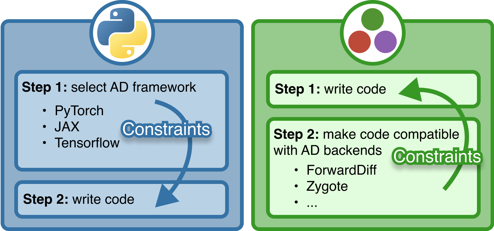

![]()
double(x) = 2x
∂(::typeof(double)) = x -> (v -> 2v) # independent from xAutomatic Differentiation
Julia’s most confusing superpower?
2024-10-29
Introduction
Slides
https://gdalle.github.io/JuliaOptimizationDays2024-AutoDiff/

Motivation
What is a derivative?
A linear approximation of a function around a point.
Why do we care?
Derivatives of complex programs are essential in optimization and machine learning.
What do we need to do?
Not much: Automatic Differentiation (AD) computes derivatives for us!
Bibliography
Understanding AD
Derivatives: formal definition
Derivative of \(f\) at point \(x\): linear map \(\partial f(x)\) such that \[f(x + v) = f(x) + \partial f(x)[v] + o(\lVert v \rVert)\]
In other words,
\[\partial f(x)[v] = \lim_{\varepsilon \to 0} \frac{f(x + \varepsilon v) - f(x)}{\varepsilon}\]
Various flavors of differentiation
- Manual: work out \(\partial f\) by hand
- Numeric: \(\partial f(x)[v] \approx \frac{f(x+\varepsilon v) - f(x)}{\varepsilon}\)
- Symbolic: enter a formula for \(f\), get a formula for \(\partial f\)
- Automatic1: code a program for \(f\), get a program for \(\partial f(x)\)
Two ingredients of AD
Any derivative can be obtained from:
- Derivatives of basic functions: \(\exp, \log, \sin, \cos, \dots\)
- Composition with the chain rule:
\[\partial (f \circ g)(x) = \partial f(g(x)) \circ \partial g(x)\]
or its adjoint1
\[\partial (f \circ g)^*(x) = \partial g(x)^* \circ \partial f(g(x))^*\]
Homemade AD (1)
Basic functions
Chain rule
Homemade AD (2)
Let’s try it out
What about Jacobian matrices?
We could multiply matrices instead of composing linear maps:
\[J_{f \circ g}(x) = J_f(g(x)) \cdot J_g(x)\]
where the Jacobian matrix is
\[J_f(x) = \left(\partial f_i / \partial x_j\right)_{i,j}\]
- very wasteful in high dimension (think of \(f = \mathrm{id}\))
- ill-suited to arbitrary spaces
Matrix-vector products
We don’t need Jacobian matrices as long as we can compute their products with vectors:
Jacobian-vector products
\[J_{f}(x) v = \partial f(x)[v]\]
Propagate a perturbation \(v\) from input to output
Vector-Jacobian products
\[w^\top J_{f}(x) = \partial f(x)^*[w]\]
Backpropagate a sensitivity \(w\) from output to input
Forward mode
Consider \(f = f_L \circ \dots \circ f_1\) and its Jacobian \(J = J_L \cdots J_1\).
Jacobian-vector products decompose from layer \(1\) to layer \(L\):
\[J_L(J_{L-1}(\dots \underbrace{J_2(\underbrace{J_1 v}_{v_1})}_{v_2}))\]
Forward mode AD relies on the chain rule.
Reverse mode
Consider \(f = f_L \circ \dots \circ f_1\) and its Jacobian \(J = J_L \cdots J_1\).
Vector-Jacobian products decompose from layer \(L\) to layer \(1\):
\[((\underbrace{(\underbrace{w^\top J_L}_{w_L}) J_{L-1}}_{w_{L-1}} \dots ) J_2 ) J_1\]
Reverse mode AD relies on the adjoint chain rule.
Jacobian matrices are back
Consider \(f : \mathbb{R}^n \to \mathbb{R}^m\). How to recover the full Jacobian?
Forward mode
Column by column:
\[J = \begin{pmatrix} J e_1 & \dots & J e_n \end{pmatrix}\]
where \(e_i\) is a basis vector.
Reverse mode
Row by row:
\[J = \begin{pmatrix} e_1^\top J \\ \vdots \\ e_m^\top J \end{pmatrix}\]
Complexities
Consider \(f : \mathbb{R}^n \to \mathbb{R}^m\). How much does a Jacobian cost?
Theorem
Each JVP or VJP takes as much time and space as \(O(1)\) calls to \(f\).
| sizes | jacobian | forward | reverse | best mode |
|---|---|---|---|---|
| generic | jacobian | \(O(n)\) | \(O(m)\) | depends |
| \(n = 1\) | derivative | \(O(1)\) | \(O(m)\) | forward |
| \(m = 1\) | gradient | \(O(n)\) | \(O(1)\) | reverse |
Fast reverse mode gradients make deep learning possible.
Using AD
Three types of AD users
- Package users want to differentiate through functions
- Package developers want to write differentiable functions
- Backend developers want to create new AD systems
Python vs. Julia: users

Image: courtesy of Adrian Hill
Python vs. Julia: developers
Image: courtesy of Adrian Hill
Why so many packages?
- Conflicting paradigms:
- numeric vs. symbolic vs. algorithmic
- operator overloading vs. source-to-source
- Cover varying subsets of the language
- Historical reasons: developed by different people
Full list available at https://juliadiff.org/.
Meaningful criteria
- Does this AD package execute without error?
- Does it return the right derivative?
- Does it run fast enough for me?
A simple decision tree
- Follow recommendations of high-level library (e.g. Flux.jl).
- Otherwise, choose mode from input/output dimensions.
- Then try the most thoroughly tested packages:
- ForwardDiff.jl or Enzyme.jl in forward mode,
- Zygote.jl, Enzyme.jl or Mooncake.jl in reverse mode.
- If nothing works, finite differences (\(\sim\) forward mode).
Enabling AD
Each package has demands
- ForwardDiff: generic number types
- Zygote: no mutation
- Enzyme: correct activity annotations, type stability (not covered here)
Typical ForwardDiff issue
MethodError: MethodError(Float64, (Dual{ForwardDiff.Tag{typeof(Main.Notebook.badcopy), Float64}}(1.0,1.0,0.0),), 0x0000000000007b14)
MethodError: no method matching Float64(::ForwardDiff.Dual{ForwardDiff.Tag{typeof(badcopy), Float64}, Float64, 2})
Closest candidates are:
(::Type{T})(::Real, !Matched::RoundingMode) where T<:AbstractFloat
@ Base rounding.jl:207
(::Type{T})(::T) where T<:Number
@ Core boot.jl:792
Float64(!Matched::IrrationalConstants.Inv2π)
@ IrrationalConstants ~/.julia/packages/IrrationalConstants/vp5v4/src/macro.jl:112
...
Stacktrace:
[1] convert(::Type{Float64}, x::ForwardDiff.Dual{ForwardDiff.Tag{typeof(badcopy), Float64}, Float64, 2})
@ Base ./number.jl:7
[2] setindex!(A::Vector{Float64}, x::ForwardDiff.Dual{ForwardDiff.Tag{typeof(badcopy), Float64}, Float64, 2}, i1::Int64)
@ Base ./array.jl:1021
[3] _unsafe_copyto!(dest::Vector{Float64}, doffs::Int64, src::Vector{ForwardDiff.Dual{ForwardDiff.Tag{typeof(badcopy), Float64}, Float64, 2}}, soffs::Int64, n::Int64)
@ Base ./array.jl:299
[4] unsafe_copyto!
@ ./array.jl:353 [inlined]
[5] _copyto_impl!
@ ./array.jl:376 [inlined]
[6] copyto!
@ ./array.jl:363 [inlined]
[7] copyto!
@ ./array.jl:385 [inlined]
[8] badcopy(x::Vector{ForwardDiff.Dual{ForwardDiff.Tag{typeof(badcopy), Float64}, Float64, 2}})
@ Main.Notebook ~/work/JuliaOptimizationDays2024-AutoDiff/JuliaOptimizationDays2024-AutoDiff/index.qmd:327
[9] vector_mode_dual_eval!
@ ~/.julia/packages/ForwardDiff/PcZ48/src/apiutils.jl:24 [inlined]
[10] vector_mode_jacobian(f::typeof(badcopy), x::Vector{Float64}, cfg::ForwardDiff.JacobianConfig{ForwardDiff.Tag{typeof(badcopy), Float64}, Float64, 2, Vector{ForwardDiff.Dual{ForwardDiff.Tag{typeof(badcopy), Float64}, Float64, 2}}})
@ ForwardDiff ~/.julia/packages/ForwardDiff/PcZ48/src/jacobian.jl:125
[11] jacobian(f::Function, x::Vector{Float64}, cfg::ForwardDiff.JacobianConfig{ForwardDiff.Tag{typeof(badcopy), Float64}, Float64, 2, Vector{ForwardDiff.Dual{ForwardDiff.Tag{typeof(badcopy), Float64}, Float64, 2}}}, ::Val{true})
@ ForwardDiff ~/.julia/packages/ForwardDiff/PcZ48/src/jacobian.jl:21
[12] jacobian(f::Function, x::Vector{Float64}, cfg::ForwardDiff.JacobianConfig{ForwardDiff.Tag{typeof(badcopy), Float64}, Float64, 2, Vector{ForwardDiff.Dual{ForwardDiff.Tag{typeof(badcopy), Float64}, Float64, 2}}})
@ ForwardDiff ~/.julia/packages/ForwardDiff/PcZ48/src/jacobian.jl:19
[13] top-level scope
@ ~/work/JuliaOptimizationDays2024-AutoDiff/JuliaOptimizationDays2024-AutoDiff/index.qmd:329ForwardDiff troubleshooting
Allow numbers of type Dual to pass through your functions.
Typical Zygote issue
ErrorException: ErrorException("Mutating arrays is not supported -- called copyto!(Vector{Float64}, ...)\nThis error occurs when you ask Zygote to differentiate operations that change\nthe elements of arrays in place (e.g. setting values with x .= ...)\n\nPossible fixes:\n- avoid mutating operations (preferred)\n- or read the documentation and solutions for this error\n https://fluxml.ai/Zygote.jl/latest/limitations\n")
Mutating arrays is not supported -- called copyto!(Vector{Float64}, ...)
This error occurs when you ask Zygote to differentiate operations that change
the elements of arrays in place (e.g. setting values with x .= ...)
Possible fixes:
- avoid mutating operations (preferred)
- or read the documentation and solutions for this error
https://fluxml.ai/Zygote.jl/latest/limitations
Stacktrace:
[1] error(s::String)
@ Base ./error.jl:35
[2] _throw_mutation_error(f::Function, args::Vector{Float64})
@ Zygote ~/.julia/packages/Zygote/NRp5C/src/lib/array.jl:70
[3] (::Zygote.var"#547#548"{Vector{Float64}})(::Vector{Float64})
@ Zygote ~/.julia/packages/Zygote/NRp5C/src/lib/array.jl:85
[4] (::Zygote.var"#2633#back#549"{Zygote.var"#547#548"{Vector{Float64}}})(Δ::Vector{Float64})
@ Zygote ~/.julia/packages/ZygoteRules/M4xmc/src/adjoint.jl:72
[5] badcopy
@ ~/work/JuliaOptimizationDays2024-AutoDiff/JuliaOptimizationDays2024-AutoDiff/index.qmd:327 [inlined]
[6] (::Zygote.Pullback{Tuple{typeof(badcopy), Vector{Float64}}, Tuple{Zygote.ZBack{Returns{Tuple{ChainRulesCore.NoTangent, ChainRulesCore.NoTangent}}}, Zygote.ZBack{Returns{Tuple{ChainRulesCore.NoTangent, ChainRulesCore.NoTangent}}}, Zygote.var"#2633#back#549"{Zygote.var"#547#548"{Vector{Float64}}}}})(Δ::Vector{Float64})
@ Zygote ~/.julia/packages/Zygote/NRp5C/src/compiler/interface2.jl:0
[7] (::Zygote.var"#294#295"{Tuple{Tuple{Nothing}}, Zygote.Pullback{Tuple{typeof(badcopy), Vector{Float64}}, Tuple{Zygote.ZBack{Returns{Tuple{ChainRulesCore.NoTangent, ChainRulesCore.NoTangent}}}, Zygote.ZBack{Returns{Tuple{ChainRulesCore.NoTangent, ChainRulesCore.NoTangent}}}, Zygote.var"#2633#back#549"{Zygote.var"#547#548"{Vector{Float64}}}}}})(Δ::Vector{Float64})
@ Zygote ~/.julia/packages/Zygote/NRp5C/src/lib/lib.jl:206
[8] (::Zygote.var"#2169#back#296"{Zygote.var"#294#295"{Tuple{Tuple{Nothing}}, Zygote.Pullback{Tuple{typeof(badcopy), Vector{Float64}}, Tuple{Zygote.ZBack{Returns{Tuple{ChainRulesCore.NoTangent, ChainRulesCore.NoTangent}}}, Zygote.ZBack{Returns{Tuple{ChainRulesCore.NoTangent, ChainRulesCore.NoTangent}}}, Zygote.var"#2633#back#549"{Zygote.var"#547#548"{Vector{Float64}}}}}}})(Δ::Vector{Float64})
@ Zygote ~/.julia/packages/ZygoteRules/M4xmc/src/adjoint.jl:72
[9] call_composed
@ ./operators.jl:1045 [inlined]
[10] (::Zygote.Pullback{Tuple{typeof(Base.call_composed), Tuple{typeof(badcopy)}, Tuple{Vector{Float64}}, @Kwargs{}}, Any})(Δ::Vector{Float64})
@ Zygote ~/.julia/packages/Zygote/NRp5C/src/compiler/interface2.jl:0
[11] call_composed
@ ./operators.jl:1044 [inlined]
[12] #_#103
@ ./operators.jl:1041 [inlined]
[13] (::Zygote.Pullback{Tuple{Base.var"##_#103", @Kwargs{}, ComposedFunction{typeof(Zygote._jvec), typeof(badcopy)}, Vector{Float64}}, Tuple{Zygote.Pullback{Tuple{typeof(Base.unwrap_composed), ComposedFunction{typeof(Zygote._jvec), typeof(badcopy)}}, Tuple{Zygote.var"#2169#back#296"{Zygote.var"#294#295"{Tuple{Tuple{Nothing}, Tuple{Nothing}}, Zygote.var"#2013#back#207"{typeof(identity)}}}, Zygote.Pullback{Tuple{typeof(Base.unwrap_composed), typeof(Zygote._jvec)}, Tuple{Zygote.var"#2013#back#207"{typeof(identity)}, Zygote.Pullback{Tuple{typeof(Base.maybeconstructor), typeof(Zygote._jvec)}, Tuple{}}}}, Zygote.var"#2180#back#306"{Zygote.var"#back#305"{:outer, Zygote.Context{false}, ComposedFunction{typeof(Zygote._jvec), typeof(badcopy)}, typeof(Zygote._jvec)}}, Zygote.Pullback{Tuple{typeof(Base.unwrap_composed), typeof(badcopy)}, Tuple{Zygote.var"#2013#back#207"{typeof(identity)}, Zygote.Pullback{Tuple{typeof(Base.maybeconstructor), typeof(badcopy)}, Tuple{}}}}, Zygote.var"#2180#back#306"{Zygote.var"#back#305"{:inner, Zygote.Context{false}, ComposedFunction{typeof(Zygote._jvec), typeof(badcopy)}, typeof(badcopy)}}}}, Zygote.Pullback{Tuple{typeof(Base.call_composed), Tuple{typeof(Zygote._jvec), typeof(badcopy)}, Tuple{Vector{Float64}}, @Kwargs{}}, Tuple{Zygote.Pullback{Tuple{typeof(Base.call_composed), Tuple{typeof(badcopy)}, Tuple{Vector{Float64}}, @Kwargs{}}, Any}, Zygote.Pullback{Tuple{typeof(Zygote._jvec), Vector{Float64}}, Tuple{Zygote.Pullback{Tuple{typeof(vec), Vector{Float64}}, Tuple{}}}}, Zygote.var"#2029#back#216"{Zygote.var"#back#214"{2, 1, Zygote.Context{false}, typeof(Zygote._jvec)}}, Zygote.var"#2141#back#284"{Zygote.var"#280#283"}}}}})(Δ::Vector{Float64})
@ Zygote ~/.julia/packages/Zygote/NRp5C/src/compiler/interface2.jl:0
[14] #294
@ ~/.julia/packages/Zygote/NRp5C/src/lib/lib.jl:206 [inlined]
[15] #2169#back
@ ~/.julia/packages/ZygoteRules/M4xmc/src/adjoint.jl:72 [inlined]
[16] ComposedFunction
@ ./operators.jl:1041 [inlined]
[17] (::Zygote.Pullback{Tuple{ComposedFunction{typeof(Zygote._jvec), typeof(badcopy)}, Vector{Float64}}, Tuple{Zygote.var"#2013#back#207"{typeof(identity)}, Zygote.var"#2366#back#423"{Zygote.var"#pairs_namedtuple_pullback#422"{(), @NamedTuple{}}}, Zygote.var"#2169#back#296"{Zygote.var"#294#295"{Tuple{Tuple{Nothing, Nothing}, Tuple{Nothing}}, Zygote.Pullback{Tuple{Base.var"##_#103", @Kwargs{}, ComposedFunction{typeof(Zygote._jvec), typeof(badcopy)}, Vector{Float64}}, Tuple{Zygote.Pullback{Tuple{typeof(Base.unwrap_composed), ComposedFunction{typeof(Zygote._jvec), typeof(badcopy)}}, Tuple{Zygote.var"#2169#back#296"{Zygote.var"#294#295"{Tuple{Tuple{Nothing}, Tuple{Nothing}}, Zygote.var"#2013#back#207"{typeof(identity)}}}, Zygote.Pullback{Tuple{typeof(Base.unwrap_composed), typeof(Zygote._jvec)}, Tuple{Zygote.var"#2013#back#207"{typeof(identity)}, Zygote.Pullback{Tuple{typeof(Base.maybeconstructor), typeof(Zygote._jvec)}, Tuple{}}}}, Zygote.var"#2180#back#306"{Zygote.var"#back#305"{:outer, Zygote.Context{false}, ComposedFunction{typeof(Zygote._jvec), typeof(badcopy)}, typeof(Zygote._jvec)}}, Zygote.Pullback{Tuple{typeof(Base.unwrap_composed), typeof(badcopy)}, Tuple{Zygote.var"#2013#back#207"{typeof(identity)}, Zygote.Pullback{Tuple{typeof(Base.maybeconstructor), typeof(badcopy)}, Tuple{}}}}, Zygote.var"#2180#back#306"{Zygote.var"#back#305"{:inner, Zygote.Context{false}, ComposedFunction{typeof(Zygote._jvec), typeof(badcopy)}, typeof(badcopy)}}}}, Zygote.Pullback{Tuple{typeof(Base.call_composed), Tuple{typeof(Zygote._jvec), typeof(badcopy)}, Tuple{Vector{Float64}}, @Kwargs{}}, Tuple{Zygote.Pullback{Tuple{typeof(Base.call_composed), Tuple{typeof(badcopy)}, Tuple{Vector{Float64}}, @Kwargs{}}, Any}, Zygote.Pullback{Tuple{typeof(Zygote._jvec), Vector{Float64}}, Tuple{Zygote.Pullback{Tuple{typeof(vec), Vector{Float64}}, Tuple{}}}}, Zygote.var"#2029#back#216"{Zygote.var"#back#214"{2, 1, Zygote.Context{false}, typeof(Zygote._jvec)}}, Zygote.var"#2141#back#284"{Zygote.var"#280#283"}}}}}}}, Zygote.Pullback{Tuple{Type{NamedTuple}}, Tuple{}}}})(Δ::Vector{Float64})
@ Zygote ~/.julia/packages/Zygote/NRp5C/src/compiler/interface2.jl:0
[18] (::Zygote.var"#78#79"{Zygote.Pullback{Tuple{ComposedFunction{typeof(Zygote._jvec), typeof(badcopy)}, Vector{Float64}}, Tuple{Zygote.var"#2013#back#207"{typeof(identity)}, Zygote.var"#2366#back#423"{Zygote.var"#pairs_namedtuple_pullback#422"{(), @NamedTuple{}}}, Zygote.var"#2169#back#296"{Zygote.var"#294#295"{Tuple{Tuple{Nothing, Nothing}, Tuple{Nothing}}, Zygote.Pullback{Tuple{Base.var"##_#103", @Kwargs{}, ComposedFunction{typeof(Zygote._jvec), typeof(badcopy)}, Vector{Float64}}, Tuple{Zygote.Pullback{Tuple{typeof(Base.unwrap_composed), ComposedFunction{typeof(Zygote._jvec), typeof(badcopy)}}, Tuple{Zygote.var"#2169#back#296"{Zygote.var"#294#295"{Tuple{Tuple{Nothing}, Tuple{Nothing}}, Zygote.var"#2013#back#207"{typeof(identity)}}}, Zygote.Pullback{Tuple{typeof(Base.unwrap_composed), typeof(Zygote._jvec)}, Tuple{Zygote.var"#2013#back#207"{typeof(identity)}, Zygote.Pullback{Tuple{typeof(Base.maybeconstructor), typeof(Zygote._jvec)}, Tuple{}}}}, Zygote.var"#2180#back#306"{Zygote.var"#back#305"{:outer, Zygote.Context{false}, ComposedFunction{typeof(Zygote._jvec), typeof(badcopy)}, typeof(Zygote._jvec)}}, Zygote.Pullback{Tuple{typeof(Base.unwrap_composed), typeof(badcopy)}, Tuple{Zygote.var"#2013#back#207"{typeof(identity)}, Zygote.Pullback{Tuple{typeof(Base.maybeconstructor), typeof(badcopy)}, Tuple{}}}}, Zygote.var"#2180#back#306"{Zygote.var"#back#305"{:inner, Zygote.Context{false}, ComposedFunction{typeof(Zygote._jvec), typeof(badcopy)}, typeof(badcopy)}}}}, Zygote.Pullback{Tuple{typeof(Base.call_composed), Tuple{typeof(Zygote._jvec), typeof(badcopy)}, Tuple{Vector{Float64}}, @Kwargs{}}, Tuple{Zygote.Pullback{Tuple{typeof(Base.call_composed), Tuple{typeof(badcopy)}, Tuple{Vector{Float64}}, @Kwargs{}}, Any}, Zygote.Pullback{Tuple{typeof(Zygote._jvec), Vector{Float64}}, Tuple{Zygote.Pullback{Tuple{typeof(vec), Vector{Float64}}, Tuple{}}}}, Zygote.var"#2029#back#216"{Zygote.var"#back#214"{2, 1, Zygote.Context{false}, typeof(Zygote._jvec)}}, Zygote.var"#2141#back#284"{Zygote.var"#280#283"}}}}}}}, Zygote.Pullback{Tuple{Type{NamedTuple}}, Tuple{}}}}})(Δ::Vector{Float64})
@ Zygote ~/.julia/packages/Zygote/NRp5C/src/compiler/interface.jl:91
[19] withjacobian(f::Function, args::Vector{Float64})
@ Zygote ~/.julia/packages/Zygote/NRp5C/src/lib/grad.jl:150
[20] jacobian(f::Function, args::Vector{Float64})
@ Zygote ~/.julia/packages/Zygote/NRp5C/src/lib/grad.jl:128
[21] top-level scope
@ ~/work/JuliaOptimizationDays2024-AutoDiff/JuliaOptimizationDays2024-AutoDiff/index.qmd:355Zygote troubleshooting
Define a custom rule with ChainRulesCore:
DifferentiationInterface
Goals
- DifferentiationInterface.jl (DI) offers a common syntax for all AD packages1
- AD users can compare correctness and performance without reading each documentation
The fine print
DI may be slower than a direct call to the package’s API (mostly with Enzyme).
Supported packages
Getting started
- Load the necessary packages
- Use one of DI’s operators with a backend from ADTypes.jl
- Increase performance via DI’s preparation mechanism.
Features
- Support for functions with scalar/array inputs & outputs:
f(x, args...)f!(y, x, args...)
- Eight standard operators including
derivative,gradient,jacobianandhessian - Combine different backends using
SecondOrder - Translate between backends using
DifferentiateWith - Exploit Jacobian / Hessian sparsity with
AutoSparse
Sparsity
Compressed differentiation
If two Jacobian columns don’t overlap:
- evaluate their sum in 1 JVP instead of 2
- redistribute the nonzero coefficients.
\[J = \begin{pmatrix} 1 & \cdot & 5 \\ \cdot & 3 & 6 \\ 2 & \cdot & 7 \\ \cdot & 4 & 8 \end{pmatrix} \quad \implies \quad J(e_1 + e_2) \text{ and } J e_3\]
Prerequisite 1: pattern detection
Find which coefficients might be nonzero.
Trace dependencies on inputs during function execution.
Prerequisite 2: pattern coloring
Split columns into non-overlapping groups.
![]()
![]()
New sparse AD ecosystem
- SparseConnectivityTracer.jl: pattern detection
- SparseMatrixColorings.jl: coloring and decompression
- DifferentiationInterface.jl: compressed differentiation
Already used by SciML and JuliaSmoothOptimizers.
Conclusion
Going further
Take-home message
Computing derivatives is automatic and efficient.
Each AD system comes with limitations.
Learn to recognize and overcome them.
References
Baydin, Atilim Gunes, Barak A. Pearlmutter, Alexey Andreyevich Radul, and Jeffrey Mark Siskind. 2018. “Automatic Differentiation in Machine Learning: A Survey.” Journal of Machine Learning Research 18 (153): 1–43. http://jmlr.org/papers/v18/17-468.html.
Blondel, Mathieu, Quentin Berthet, Marco Cuturi, Roy Frostig, Stephan Hoyer, Felipe Llinares-López, Fabian Pedregosa, and Jean-Philippe Vert. 2022. “Efficient and Modular Implicit Differentiation.” In Advances in Neural Information Processing Systems. https://openreview.net/forum?id=Q-HOv_zn6G.
Blondel, Mathieu, and Vincent Roulet. 2024. “The Elements of Differentiable Programming.” arXiv. https://doi.org/10.48550/arXiv.2403.14606.
Griewank, Andreas, and Andrea Walther. 2008. Evaluating Derivatives: Principles and Techniques of Algorithmic Differentiation. 2nd ed. Philadelphia, PA: Society for Industrial and Applied Mathematics.
Mandi, Jayanta, James Kotary, Senne Berden, Maxime Mulamba, Victor Bucarey, Tias Guns, and Ferdinando Fioretto. 2023. “Decision-Focused Learning: Foundations, State of the Art, Benchmark and Future Opportunities.” arXiv. https://doi.org/10.48550/arXiv.2307.13565.
Margossian, Charles C. 2019. “A Review of Automatic Differentiation and Its Efficient Implementation.” WIREs Data Mining and Knowledge Discovery 9 (4): e1305. https://doi.org/10.1002/widm.1305.
Mohamed, Shakir, Mihaela Rosca, Michael Figurnov, and Andriy Mnih. 2020. “Monte Carlo Gradient Estimation in Machine Learning.” Journal of Machine Learning Research 21 (132): 1–62. http://jmlr.org/papers/v21/19-346.html.